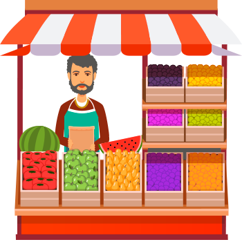

Quiztory es un kiosco que fomenta el turismo asi como la económia local de pequeños y grandes establecimientos comerciales de cualquier tipo
Quistory es un kiosco que fomenta el turismpo y el comersio local de pequeños, medianos y grandes establecimientos tales como restaurantes, tiendad de abarrotes, super mercados, hoteles, etc.
Hay arias modalidades de juego, dentro de los cuales estan: Preguntas y Respuestas, Verdadero o Falso y rompecabezas con lo cuales los usuarios interactuaran, el propocito principal de los juegos es fomentar lugares culturales y turisticos de la ciudad, ademas de dar promociones de los negocios que patrosinantes para motivar al usuario a visitarlos y asi generar ventas